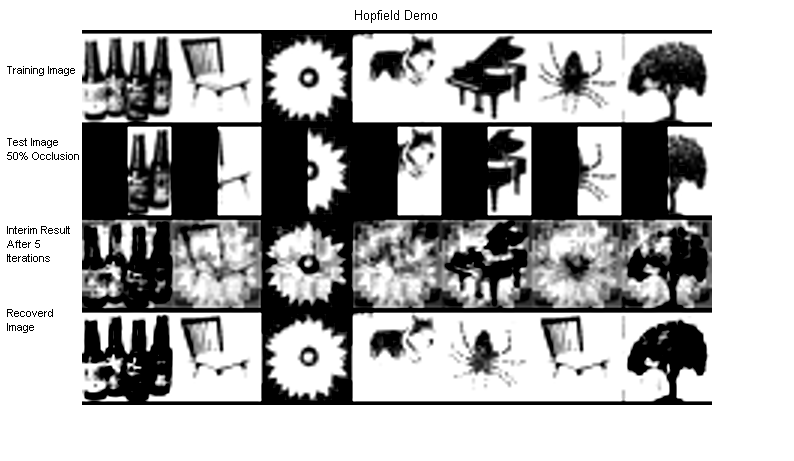

Demonstrate the use of a Hopfield network for associative memory.
Requires the neural network and image processing toolboxes PMTKneedsImagesToolbox PMTKneedsNnetToolbox PMTKslow
% This file is from pmtk3.googlecode.com requireImageToolbox loadData('binaryImages'); % 7 binary images, each 150x150 newsize = 30; % new size 30x30 nimages = 7; occlusion = 0.5; target = zeros(newsize*newsize,length(images)); %warning('off', 'MATLAB:intConvertOverflow'); %warning('off', 'MATLAB:intConvertNonIntVal'); for i=1:nimages image= imresize(double(images{i}),[newsize,newsize]); image(image == 0) = -1; images{i} = image; target(:,i) = image(:); end %warning('on', 'MATLAB:intConvertOverflow'); %warning('on', 'MATLAB:intConvertNonIntVal'); clear image net = newhop(target); % Train Hopfield network % Create test images croppedImages = cell(1,nimages); for i=1:nimages img = images{i}; img(:,1:floor(occlusion*newsize)) = -1; croppedImages{i} = img; end clear img % Test Crecon = cell(1,nimages); Crecon5 = cell(1,nimages); Crecon100 = cell(1,nimages); for i=1:nimages [output, junk1, junk2] = sim(net, {1 100}, {}, {croppedImages{i}(:)}); Crecon{i} = output; Crecon5{i} = reshape(output{5},[newsize,newsize]); Crecon100{i}= reshape(output{100},[newsize,newsize]); end clear i junk1 junk2 output %Display hb = -1*ones(1,7*newsize); im = [hb;reshape(target,[newsize,nimages*newsize]);hb;cell2mat(croppedImages);hb;cell2mat(Crecon5);hb;cell2mat(Crecon100);hb]; imshow(imresize(im,3*size(im))); title('Hopfield Demo') annotation(gcf,'textbox',[0 0.7723 0.1 0.1],'String',{'Training Image'},'FitBoxToText','off','LineStyle','none','FontSize',8); annotation(gcf,'textbox',[0 0.6148 0.1 0.1],'String',{'Test Image','50% Occlusion'},'HorizontalAlignment','left','FitBoxToText','off','LineStyle','none','FontSize',8); annotation(gcf,'textbox',[0 0.4246 0.1 0.1],'String',{'Interim Result','After 5','Iterations'},'HorizontalAlignment','left','FitBoxToText','off','LineStyle','none','FontSize',8); annotation(gcf,'textbox',[0 0.2436 0.1 0.1],'String',{'Recoverd','Image'},'HorizontalAlignment','left','FitBoxToText','off','LineStyle','none','FontSize',8); printPmtkFigure hopfieldDemo